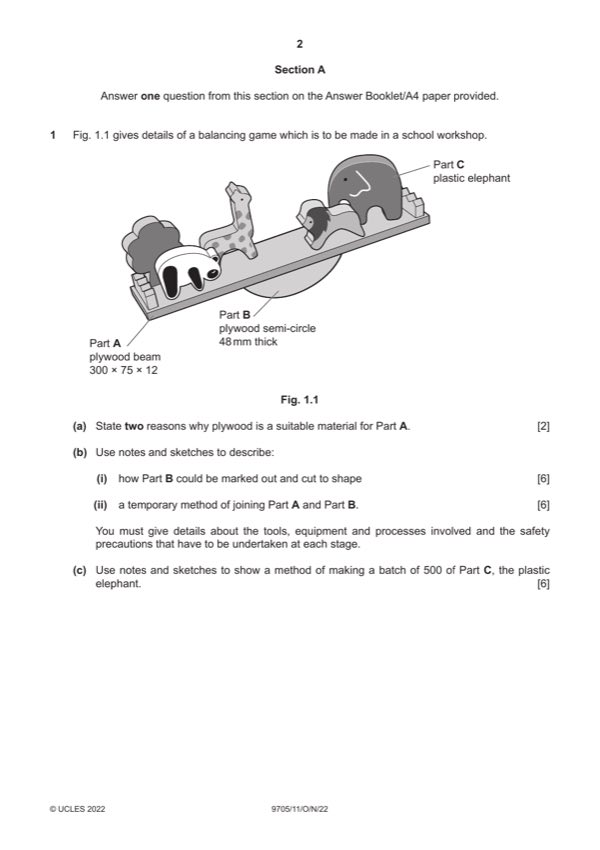

Question 1

Original paper page 2
Part 1(a) — solution
Exemplar answers 2 Any other valid reason (AOVR)
All round strength [1]
Relatively cheap [1]
Readily available material [1]
Easy to cut to shape [1]
Stable material [1]
0–2
Mark points
- Include the ideas shown in the solution above.
Part 1(b)(i) — solution
Sketches and/or notes show: 6 Accept hand or CNC methods.
Marking out and cutting to shape Exemplar answer:
Suitable method [0–3] • Use of template and pencil to mark out
Tools, equipment, or processes [0–2] • Cut with a coping saw
Safety precaution [0–1] • Smoothed with glasspaper
0–6
Mark points
- Include the ideas shown in the solution above.
Part 1(b)(ii) — solution
Sketches and/or notes show: 6 Exemplar answers include:
A method e.g., glue or a suitable method of joining, e.g., screws [0–3] • Screws
Tools, equipment, or processes [0–2] • Pegs
Safety precautions [0–1]
0–6
Mark points
- Include the ideas shown in the solution above.
Part 1(c) — solution
Sketches and/or notes show: 6 Accept hand or CNC methods.
Suitable method identified for batch production, e.g., injection Exemplar answers include:
moulding • Injection moulding
Description of method [0–3] • Use of laser cutter
Tools and/or equipment named [0–3]
0–6
2022 Page 4 of 21
9705/11 Cambridge International AS & A Level – Mark Scheme October/November 2022
Guidance
Mark points
- Include the ideas shown in the solution above.